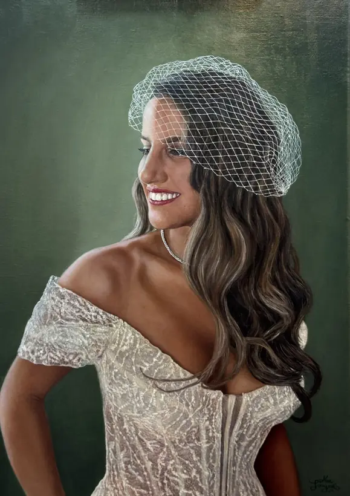

08 / 08 / 2026
Certificado
de autenticidad
Título: Karin Goldberg
Técnica: Óleo sobre lino
Dimensiones: 48 x 68 cm
Año de realización: 2025
Artista: Maximiliano Langevin Larraín
Certifico que esta obra
es una creación original
realizada por mí y garan-
tizo su autenticidad
Firma
@max_langevinci | maxlangevinl@gmail.com